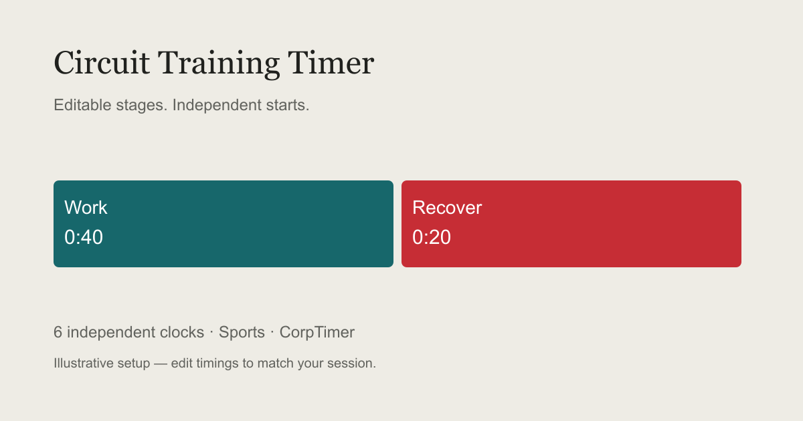

Circuit Training Timer
Run separate work and recovery clocks for training stations.
Keep this page open. Clocks restore paused after a reload. Stage cues require sound enabled.
How it works and advice

How the Circuit Training Timer works
Run separate work and recovery clocks for training stations.
How to use it
- Name each station, edit its work and recovery and start individually or together.
- Open Edit stages to name each phase and change its duration in seconds while the clock is paused. Each clock starts independently.
- Pause to hold the current stage, use Next stage to finish early, or Reset to start that clock again. Export CSV for your elapsed times and lap splits.
Practical advice
- Repeat a station with Reset. This board does not coordinate remote screens.
- Test the setup before the session.
Try one short test before your session. Keep the device awake and the tab visible; browser alarms are not guaranteed while the device is locked.
Can I use this timer offline?
The clocks run without a server after the page loads. Opening an uncached page still requires a connection. No account is required; this board stays in this browser.